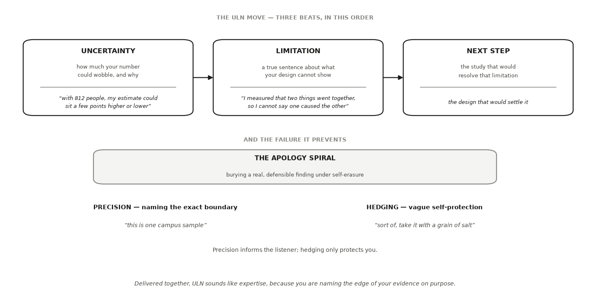

HONR 46400 · Evidence-Driven Research
Studio 10 — Prepare to publish or present
What you can defend when you leave
Studio 10
Turn your bounded claims into an artifact ready for publication or presentation, and rehearse defending it against real questions.
The milestone ahead
Studio 10
This studio closes with Milestone 10: Your artifact, ready to publish or present, a short chapter of its own after the lessons. What it asks you to produce. A short venue contract and one artifact ready for publication or presentation that satisfies it - a paper or research note, a seminar or conference talk, a poster, or another venue’s format - with a content map tracing every load-bearing claim and number, and a defense rehearsal record. This is not yet public release.
The lessons in this studio
Studio 10 · Road map
- Lesson 32 — Research Posters: if your venue is a poster, or your format carries a quantitative figure: the draft with labeled values, uncertainty shown as the design licenses (interval or caveat), and a headline verbed to your boundary.
- Lesson 33 — Poster Criticism: if your venue is a poster: the gallery-walk audit of your draft, hits ranked by how far the error travels, fixed once, and the lock call.
- Lesson 34 — Research Pitches, Talks, and Seminars: if you will speak, whether a pitch, a seminar, or a conference talk: your 30-second and 3-minute spines, built boundary-first, tested aloud on an outsider, and expanded to the venue’s length.
- Lesson 35 — Difficult Questions and Uncertainty: your five hardest fair questions with defend-or-concede answers, and your uncertainty-and-limitations statement in ULN form.
Research Posters
Lesson 1 of this studio · Chapter 32
whether your headline figure’s picture says exactly what its numbers say, and nothing more
The research decision
Chapter 32
If your artifact carries a quantitative visual, decide what that visual must let the audience see and what uncertainty must stay visible. If your venue is a poster, also decide how the figure participates in the page’s scan path. You own the headline verb, and you own the call that the picture never says more than the data.
A stranger reads your tallest bar before your methods
Chapter 32 · Why this decision matters
- A skeptical peer, walking a poster session, four feet from your board.
- From four feet away one thing is read: does your tallest bar mean what it looks like?
- The distrust that follows lands on the whole board, not just the figure.
If your axis starts halfway up the scale, I have caught you before I read a word of your methods.
The venue changes the viewing conditions, never the standard
Chapter 32 · Why this decision matters
- A journal reader can study a figure for minutes.
- A seminar audience may see it for thirty seconds.
- A poster visitor may first meet it from four feet away.
- At a poster session a stranger gives you ninety seconds and one glance.
A figure can lie with true numbers
Chapter 32 · Why this decision matters
- An axis that starts just below your data turns a rounding-error gap into a landslide.
- A reader who cannot tell your red bar from your green one receives no message.
- Every number can be correct while the picture still overclaims.
Your headline verb promises more than you think
Chapter 32 · The concept
Headline claim
the one sentence you want a reader to leave with
Claim boundary
the line between what your evidence licenses and what it does not
Compass position
the kind and reach of the question your project answered, which fixes what the headline is allowed to say
- “Version B raised our sales” promises far more than “Version B sold slightly more.”
- An observational comparison may say “is associated with,” never “causes.”
- A descriptive question about the weeks you measured licenses no claim about why.
The picture cannot say more than the data
Chapter 32 · The concept
Figure honesty
the rule that a figure’s picture cannot say more than its data
Truncated axis
an axis that starts above the bottom of its scale instead of at the floor
Uncertainty on the page
the interval or caveat printed in the same glance as the claim, not buried in a footnote
- If the real gap is three points, the bars should look about three points apart.
- A completion-rate axis running 70 to 76 magnifies a small difference into a cliff.
- A “±4 points” error bar drawn right on the headline figure.
Color alone carries nothing for a red-green color-blind reader
Chapter 32 · The concept
Accessibility
whether your message reaches readers who perceive differently
Redundant encoding
carrying the same distinction in more than one channel, so no single channel is load-bearing
- A red-green bar pair carries nothing for a red-green color-blind reader, roughly 1 in 12 men (Crameri et al. 2020).
- Label each bar with its value and give each a pattern, so color becomes a bonus.
- For the web version of a poster, WCAG 2.2 is the published standard (World Wide Web Consortium 2024).
- Its normative scope is web content, so a printed board takes the same rules as good practice.
Fail any one audit and the poster overclaims
Chapter 32 · The concept
- One judgment made four ways, and each way has a name.
- Four audits to run on your own board: claim boundary, figure honesty, uncertainty, accessibility.
- Correct arithmetic is no defense against a picture that oversells it.
A poster that fails any one of these overclaims, even when its numbers are exactly right.
71 percent against 74, with intervals that overlap
Chapter 32 · A worked example
- A business-analytics project comparing two versions of an online store checkout page.
- Completion rate: the share of shoppers who start checkout and finish the purchase.
- Across weekly samples Version A means 71 percent, Version B means 74.
- The 95% interval on each mean is about ±4 points, so the two overlap.
The first draft fails all four audits at once
Chapter 32 · A worked example
- Figure honesty: on an axis floored at 70, the taller bar is drawn four times the shorter.
- Uncertainty: the intervals overlap, and nothing on the board shows it.
- Claim boundary: “BOOSTS” is a decisive, causal verb for a three-point, overlapping gap.
- Accessibility: told apart by red and green alone, with no value a screen reader can read.
Same data, and only the honesty changed
Chapter 32 · A worked example
- Run the axis 0 to 100 and print each mean as a label on its bar.
- Draw the ±4-point interval on top of the bar it belongs to.
- Separate the bars with a color-blind-safe pair plus a hatch pattern.
- Rewrite the headline: “Version B completed about 3 points higher, within overlapping intervals.”
Read the printed gap before you look at the bars
Chapter 32 · A worked example
- Watch the printed gap in points, then the overlap line that follows it.
- The axis is fixed 0 to 100, so bar heights match the numbers they report.
- Each bar carries its value, its interval, and a hatch that survives grayscale.
import numpy as np, pandas as pd
import matplotlib.pyplot as plt
SEED = 464
rng = np.random.default_rng(SEED)
weeks = 12
a = rng.normal(0.68, 0.070, size=weeks)
b = np.random.default_rng(SEED + 1).normal(0.705, 0.070, size=weeks)
means = np.array([a.mean(), b.mean()]) * 100
ci = np.array([1.96 * v.std(ddof=1) / np.sqrt(weeks) for v in (a, b)]) * 100
print(f"Version A: {means[0]:.0f}% ± {ci[0]:.0f} "
f"Version B: {means[1]:.0f}% ± {ci[1]:.0f} gap {means[1]-means[0]:.0f} pts")
print(f"intervals overlap: {means[0] + ci[0] > means[1] - ci[1]}")
# the honest figure: zero baseline, intervals drawn, pattern not colour alone
fig, ax = plt.subplots(figsize=(4.2, 3.2))
ax.bar(["Version A", "Version B"], means, yerr=ci, capsize=6,
color=["#4a4a4a", "#a8a8a8"], hatch=["", "//"], edgecolor="black")
ax.set_ylim(0, 100)
ax.set_ylabel("completion rate (%)")
ax.set_title("Completion rate by checkout version")
for i, (m, e) in enumerate(zip(means, ci)):
ax.text(i, m + e + 3, f"{m:.0f}% ± {e:.0f}", ha="center", fontsize=9)
plt.tight_layout()
plt.show()The figure rules travel; the poster does not
Chapter 32 · A worked example
- Honest axes, values on the marks, uncertainty shown where the design licenses it.
- Distinctions carried in two channels travel with the figure to any format.
- The scan path and the print lock belong to this format alone.
- Borrow by naming the technique, never by claiming the whole poster transfers.
An AI failure case
Chapter 32
Where the tool failed
You paste the described figure and ask your AI for the hardest reviewer questions. It returns a confident, well-organized list of six: sample size, how many weeks were sampled, generalization to other product pages, seasonal traffic, and two more. Every question is reasonable, and not one mentions the truncated axis, the single worst flaw on the board. The list looks complete, so it is tempting to trust it and move on.
How it failed
Chapter 32 · An AI failure case
- You catch it by mapping each returned question to an audit.
- Claim boundary, sampling, and methods all draw questions; figure honesty draws none.
- That empty row is the finding.
- You check the number your own cell printed, the exaggeration the floored axis creates, and you add the figure-honesty hit the tidy list skipped.
- Fluency is not completeness.
Do not delegate
Chapter 32
This stays yours
The words of your headline and the verb that carries its boundary are yours. So is the judgment that the figure’s impression matches its number, the call that the uncertainty is visible in the same glance, and the decision that the page is honest enough to lock. AI can generate the skeptic’s questions and scan your code for color-only channels. It cannot see your board, and it cannot decide the claim was earned. Those stay with you.
It is your turn
Chapter 32 · Your move
- Choose the single figure that carries your lead claim, and draw it with the axis running the full scale of the measure.
- Print each value as a label on the mark it belongs to, and show the uncertainty the design licenses right on the figure so the uncertainty arrives in the same glance as the number.
- Carry every meaningful distinction in at least two channels, so color is never the only signal a reader can lose.
- Write the headline above the figure using the verb your claim boundary allows, and lay out the rest of the page so a stranger finds that headline in under a minute.
- Log it in your AI Research Ledger, and verify at least one number on the page with a named method from the Verification Guide.
Work it in the companion notebook with Chapter 32 open beside it. Log every delegation in your AI Research Ledger.
Poster Criticism
Lesson 2 of this studio · Chapter 33
whether this draft is honest enough to become permanent, or needs one more fix first
The research decision
Chapter 33
If your venue is a poster, run the gallery walk and the print-lock audit before the artifact leaves your control. Whatever your format, you decide whether the draft is done or needs one more fix, and you defend the lock call out loud.
A judge stops at one number on your board
Chapter 33 · Why this decision matters
The decision on the table: honest enough to become permanent, or one more fix first?
- A research-integrity judge probes whether a poster’s claims are actually backed.
- “Where did this come from?”
- Walk them to the exact line of code and the whole poster earns trust.
- Say “somewhere in the analysis” and they stop believing every other number.
Once the file goes to the printer you cannot patch it
Chapter 33 · Why this decision matters
- The honesty has to be built in before the poster leaves your hands.
- This is the last audit between a draft poster and a permanent one.
- Done, or one more fix first. You make that call.
Three passes, and each one ends in a decision only you can make
Chapter 33 · The concept
- Pass one: the gallery-walk audit, a fixed checklist instead of a glance.
- Pass two: the oral defense, questions you cannot edit afterward.
- Pass three: the lock, when the poster stops being changeable.
The claim boundary sits in the headline verb
Chapter 33 · The concept
Claim boundary
the line between what your evidence licenses and what it does not
Figure honesty
a chart cannot say more than its data
Redundant encoding
carrying a distinction in more than one channel
- An observational field trial may say “is associated with,” never “causes.”
- An axis starting just below the data draws a small gap as a canyon.
- A value label plus a hatch pattern, so color is never the only signal.
Four questions, and a fifth about who can receive the claim
Chapter 33 · The concept
- Claim boundary: does the headline stay inside its evidence?
- Figure honesty: does the picture match the numbers?
- Read path: does a stranger find the headline in ninety seconds (Erren & Bourne 2007)?
- Uncertainty: does the interval sit beside the claim, not buried in a footnote?
- Accessibility: can every reader receive the claim (Crameri et al. 2020)?
Defend what your evidence licenses; concede what it never bought
Chapter 33 · The concept
- Three lenses cover almost every hard question at your board.
- An outsider tests whether your claim survives translation.
- A specialist probes a design choice.
- A skeptic offers a rival explanation for the same evidence.
- Defend-versus-concede: conceding means narrowing the claim on the spot.
The audit before the lock is the most consequential one you run
Chapter 33 · The concept
- Terminal lock: the moment the poster becomes final and unchangeable.
- Claim-evidence traceability: every number traces to the exact cell that produced it.
- That is what lets you show the line when a judge points at your board.
Compost RAISES corn yield, on fields the grower chose
Chapter 33 · A worked example
- A plant-biology poster, with a bar chart of mean grain yield at its center.
- Compost-amended plots against plots that got none. A red bar and a green bar.
- 185 and 191 bushels per acre. A gap of 6.
- The y-axis starts at 180, and no interval is shown.
- Nothing was randomized. The grower decided which fields got compost.
Each audit catches a different flaw on the same board
Chapter 33 · A worked example
- Claim boundary: “raises” is causal, but a richer field could bring both compost and yield.
- Honest headline: compost is associated with about 6 more bushels per acre.
- Figure honesty: an axis floored at 180 draws 6 bushels several times taller than it is.
- Uncertainty: a 95% interval of roughly ±9 bushels per acre swamps a 6-bushel gap.
- Accessibility: red-green bars fail a reviewer who is red-green color-blind.
You cannot fix everything, so rank by how far the error travels
Chapter 33 · A worked example
- The claim-boundary hit travels farthest.
- A reviewer who catches one causal overreach distrusts the whole board.
- So you lock the associational verb first.
- That decision, made by you and defended out loud, is the work of this chapter.
Rebuild the board’s data and print the interval it left off
Chapter 33 · A worked example
- Watch the two means and then the gap the poster headlined.
- Watch the interval the board never showed.
- The last printed line is the one the headline’s verb depends on.
import numpy as np, pandas as pd
import matplotlib.pyplot as plt
SEED = 464
rng = np.random.default_rng(SEED)
# Fields the GROWER chose. Richer fields got the compost.
n_plots = 60
soil_quality = rng.normal(0, 1, size=n_plots)
composted = soil_quality > np.median(soil_quality) # not randomized
yield_bu = 184 + 4.5 * soil_quality + rng.normal(0, 11, size=n_plots)
means = np.array([yield_bu[~composted].mean(), yield_bu[composted].mean()])
ci = np.array([1.96 * yield_bu[g].std(ddof=1) / np.sqrt(g.sum())
for g in (~composted, composted)])
print(f"no compost : {means[0]:.0f} bu/ac ± {ci[0]:.0f}")
print(f"composted : {means[1]:.0f} bu/ac ± {ci[1]:.0f}")
print(f"gap : {means[1]-means[0]:.0f} bu/ac")
print(f"mean soil quality, composted vs not : "
f"{soil_quality[composted].mean():+.1f} vs {soil_quality[~composted].mean():+.1f}")
fig, ax = plt.subplots(figsize=(4.2, 3.2))
ax.bar(["no compost", "composted"], means, yerr=ci, capsize=6,
color=["#4a4a4a", "#a8a8a8"], hatch=["", "//"], edgecolor="black")
ax.set_ylim(0, 230)
ax.set_ylabel("grain yield (bu/ac)")
ax.set_title("Yield by compost status (grower-chosen fields)")
plt.tight_layout()
plt.show()The redraw runs the axis from zero and stops relying on color
Chapter 33 · A worked example
ax.set_ylim(0, 230)puts the 6-bushel gap back at its true size.- Two grays plus a hatch pattern carry the distinction without color.
- Error bars put the interval beside the bars instead of nowhere.
An AI failure case
Chapter 33
Where the tool failed
You describe your compost figure to your AI and ask for the hardest skeptic questions. Back comes a crisp six-item list: the sample size, the single growing season, the soil-test method, generalizability to other regions, cost, and the definition of “yield.” It reads as thorough, and the temptation is to treat the poster as fully audited.
How it failed
Chapter 33 · An AI failure case
- It is not.
- The list never mentions the truncated axis, and never mentions the red-green bars.
- Those are the two most concrete, most fixable flaws on the board, and the polished list quietly skipped both.
- This is the illusion of completeness: a long, organized answer that omits the thing that matters most.
- Here is how you catch it.
Do not delegate
Chapter 33
This stays yours
These stay yours, however fluent the tool sounds. The words of your headline claim, and the verb that keeps it inside your compass position. The call, made out loud, to defend a point or concede it. And the decision that the poster is honest enough to lock. The tool can generate hard questions and scan a figure for color traps; deciding what your evidence licenses, and answering for it at the board, is yours.
It is your turn
Chapter 33 · Your move
- Run the gallery-walk audit on your own draft as if you had never seen it: claim boundary, figure honesty, read path, uncertainty, accessibility.
- Rank the hits by how far the error travels.
- Field the three lenses out loud: an outsider, a specialist, and a skeptic with a rival explanation.
- Revise once, fixing the hits in ranked order, then make the lock call.
- Log it in your AI Research Ledger, and verify at least one fixed number with a named method from the Verification Guide.
Work it in the companion notebook with Chapter 33 open beside it. Log every delegation in your AI Research Ledger.
Research Pitches, Talks, and Seminars
Lesson 3 of this studio · Chapter 34
what gets cut when you say your claim out loud, and what never gets cut
The research decision
Chapter 34
Build a spoken spine that survives your venue’s actual length. A thirty-second pitch, a three-minute walk, and a twenty-minute seminar are not one artifact at different speeds; each makes a different promise to the audience, and the claim must survive both compression and expansion without growing stronger in the shorter version.
The words this chapter uses
Chapter 34 · Key terms
Compression
a shorter version of a claim that keeps its boundary.
Inflation
a version that quietly makes the claim bigger.
A finished poster is silent until a visitor stops
Chapter 34 · Why this decision matters
- A finished poster is silent.
- The moment a visitor stops, your voice takes over.
- Speaking is faster than reading, so you compress on the fly.
- That is where claims quietly grow.
What she remembers is the presenter who said where the claim stops
Chapter 34 · Why this decision matters
- A skeptical peer is working the room at a research conference.
- She stops at maybe forty posters in an afternoon.
- The ones who oversold lost her on the second sentence.
What I remember is not the one with the most data. It is the one whose presenter told me, in one clean breath, exactly what they found and exactly where it stops.
You want a pitch you can say cold, without widening the claim
Chapter 34 · Why this decision matters
- She is not testing your data.
- She is testing whether your spoken sentence still matches the sentence on your board.
- So you build a pitch you can say cold, under pressure.
- It never widens the claim your evidence earned.
A pitch is a prepared spoken version, cut to a fixed slice of time
Chapter 34 · The concept
Pitch
a short, prepared spoken version of your project, built to fit a fixed slice of time (Bourne 2007)
Pitch architecture
the fixed set of beats each version moves through: hook, claim, evidence, boundary, invitation (Alley 2013)
- The thirty seconds you give a visitor who pauses is one pitch.
- The guided tour you give the one who stays is another.
- Different lengths, one skeleton.
Five beats, and pressure comes for the fourth one
Chapter 34 · The concept
- Hook: one sentence a stranger outside your field cares about.
- Claim: your headline, said plainly and inside its limits.
- Evidence: the finding that earns the claim, one spoken sentence at a time.
- Boundary sentence: one sentence naming what the claim does not show.
- Invitation: a reason to look closer.
One skeleton at three lengths, and the boundary is in all three
Chapter 34 · The concept
- 30-second hook: hook, claim, boundary, invitation, with no evidence yet.
- 90-second walk: the hook plus two or three evidence beats.
- Full pitch: three to five minutes.
- Deciding what goes in each length is the choice this chapter equips.
Compression loses a detail. Inflation loses the truth.
Chapter 34 · The concept
- Full: “on data the model had never seen, it flagged four of every five slow tickets.”
- Compressed: “on new tickets, it caught most of the slow ones.”
- Inflated: “my model predicts which tickets will be slow.”
- The same rule governs every length you speak.
The excited-mouth upgrade is your spoken verb outrunning your written one
Chapter 34 · The concept
- You wrote “is associated with.” Your mouth says “causes.”
- The boundary moves while nobody watches the words.
- That is the failure to hunt in your own pitch.
Your headline is 78% precision on tickets the model never saw
Chapter 34 · A worked example
Held-out set
a slice of your data the model never learned from, kept aside so its score is honest
Precision
the share of a model’s flags that turn out correct
- You trained on 4,000 past tickets and tested on 1,000 the model never saw.
- On that held-out set, when it flagged a ticket “slow,” it was right about 78% of the time.
- Poster headline: “On held-out tickets, the model flagged slow ones with 78% precision.”
The claim, compressed for speech, still says ‘never seen’
Chapter 34 · A worked example
- Hook: “a help desk drowns in tickets every morning and cannot tell which will drag on.”
- Claim: “On tickets it had never seen, my model flagged the slow ones,”
- “and when it raised a flag it was right about three times in four.”
- Invitation: “The surprising part is which tickets fooled it. Want the walk?”
The boundary sentence is the beat you rehearse to reflex
Chapter 34 · A worked example
- “That number is precision on a held-out slice, not overall accuracy,”
- “and the model still misses some slow tickets.”
- The fix is mechanical: mark the boundary sentence in your script.
- Say it at every length, even the 30-second one.
Drop two words and you have claimed what your test never showed
Chapter 34 · A worked example
- Drop “held-out” and you have claimed the model works on any ticket.
- Your test never showed that.
- Swap “precision” for “accuracy” and you quote a number your poster does not report.
- Both feel natural, because the shorter sentence sounds cleaner.
Run it: the number in the claim, and the number behind the boundary
Chapter 34 · A worked example
- 1,000 held-out tickets, and about 22% of them really do drag on.
- Precision is the headline number: right when it flags.
- Recall is the second number, the share of slow ones caught.
- SEED is 464, so every run in the room prints the same numbers.
import numpy as np, pandas as pd
SEED = 464
rng = np.random.default_rng(SEED)
# 1,000 held-out tickets the model never trained on.
held_out = 1000
slow = rng.random(held_out) < 0.22 # 22% really do drag on
flagged = np.where(slow, rng.random(held_out) < 0.62, # caught
rng.random(held_out) < 0.037) # false alarms
precision = slow[flagged].mean()
recall = flagged[slow].mean()
print(f"tickets flagged 'slow' : {flagged.sum()}")
print(f"precision (right when it flags) : {precision*100:.0f}%")
print(f"recall (share of slow ones caught): {recall*100:.0f}%")
print(f"\nthe headline number is the first one. the second is what the")
print("boundary sentence is about: the model still misses some slow tickets")An AI failure case
Chapter 34
Where the tool failed
You paste your 90-second walk and ask a tool to compress it to a 30-second hook. Back comes a crisp, confident line: “My model predicts slow help-desk tickets 78% of the time.” It reads beautifully, and it is wrong twice. It dropped “held-out,” so it now claims the model works on any ticket, and it turned precision into a general “78% of the time,” a number your poster never reports. The sentence is shorter and smoother than yours, which is exactly the trap.
How it failed
Chapter 34 · An AI failure case
- You catch it by putting the compressed line next to your poster’s boundary sentence and reading them word for word.
- “Predicts … 78% of the time” does not match “precision on a held-out slice.” Then you say the line to a friend, who asks, “so it’s right 78% of the time on any ticket?” That question is the widened claim coming back at you.
- You keep your own boundary sentence and drop the tool’s version.
- If your talk carries slides, the slides serve the spoken spine and never replace it.
- Build the talk first, add a slide only where a listener needs to see what they cannot hold in memory, and give every quantitative visual the figure discipline from the poster chapter: honest axes, values on the marks, and uncertainty shown where the design licenses it, as an interval or an honest caveat.
Do not delegate
Chapter 34
This stays yours
Three calls stay yours. You decide which claim your evidence actually supports, where the claim must stop (the exact boundary sentence), and whether a compressed sentence still says what the poster says. A tool can trim words and flag jargon. It cannot decide the shorter sentence is still true, and it will not be standing at the board when the stranger asks. You say the sentence. You own it.
It is your turn
Chapter 34 · Your move
- Write your boundary sentence first, on its own line, and mark it.
- Build the 30-second version: hook, claim, boundary, invitation, with no evidence beats yet.
- Build the 3-minute version: the same skeleton with two or three evidence beats and the same boundary sentence, word for word.
- Expand to your venue’s actual length: grow the 3-minute spine section by section (problem and gap, question, method, evidence, boundary and limitations, next step) until it fills the time, and write the transformation memo line for what each expansion added.
- Say the versions out loud to someone outside your field and have them repeat your claim back to you.
- Log it in your AI Research Ledger, and verify at least one compressed sentence with a named method from the Verification Guide, such as peer reasoning.
Work it in the companion notebook with Chapter 34 open beside it. Log every delegation in your AI Research Ledger.
Difficult Questions and Uncertainty
Lesson 4 of this studio · Chapter 35
how you will state your study’s uncertainty and its limits out loud, before a stranger forces the question
The research decision
Chapter 35
Prepare to answer the hardest reasonable question in the channel your venue actually uses: live discussion, a reviewer report, an editor query, or a written response. The answer does the same work in every channel — name the concern, state what the evidence supports, acknowledge what it does not resolve, and show what changes as a result — and you prepare it in advance, never improvise it.
She trusts you more when you name what your study cannot show
Chapter 35 · Why this decision matters
- A policy stakeholder who has heard a thousand poster pitches.
- Insist it is airtight and she starts looking for the crack herself.
- The decision: how you state your uncertainty and limits out loud, before a stranger forces it.
When a presenter tells me, unprompted, exactly what their study can’t show, I trust everything else they said more.
Your work is already honest. The danger now is your own mouth.
Chapter 35 · Why this decision matters
- Your poster, talk, or page is finished and honest.
- Under pressure one presenter buries a real finding under apology.
- The other upgrades a careful ‘went together’ into a confident ‘caused.’
- Both misstate the evidence you actually hold.
ULN speaks a boundary in three beats
Chapter 35 · The concept
Uncertainty statement
a sentence saying how much your number could wobble, and why
Limitation
a true sentence about what your design cannot show
Next step
the study that would resolve that limitation
- Uncertainty: ‘with 812 people, my estimate could sit a few points higher or lower.’
- Limitation: ‘I measured that two things went together, so I cannot say one caused the other.’
- Delivered together, ULN sounds like expertise, because you name the edge on purpose.
The apology spiral buries a finding you could defend
Chapter 35 · The concept
- ‘Honestly this is probably all wrong, my sample’s tiny.’
- That is self-erasure, and the finding underneath it was real.
- ULN exists to prevent exactly this.
‘One campus sample’ is precision; ‘grain of salt’ is hedging
Chapter 35 · The concept
Precision
naming the exact boundary
Hedging
vague self-protection that blurs where the claim stops
- ‘This is one campus sample’ tells the listener where your claim stops.
- ‘Sort of, take it with a grain of salt’ tells them nothing.
- Precision informs the listener. Hedging only protects you.
Three beats turn a limit into expertise
Chapter 35 · The concept
- Uncertainty, then limitation, then next step, in that order.
- Delivered together, ULN sounds like expertise, because you are naming the edge on purpose.
- Precision names the exact boundary; hedging only blurs where the claim stops.

Five prepared questions cover the space
Chapter 35 · The concept
- A question bank is a written list of the hardest fair questions a visitor could ask.
- Each one arrives with a prepared answer.
- One per recurring type: method, alternative explanation, so-what, generalization, AI-use.
- Write it down. Do not plan to think of it in the room.
An honest don’t-know is an admission with content
Chapter 35 · The concept
- Name what you cannot say.
- Name the thing you can stand on.
- Name the method that would settle it.
- Use it when a banked question has no full answer.
Six seconds faster, and a visitor asks whether the toolbar caused it
Chapter 35 · A worked example
- You work with usage logs from a small software company’s app.
- Some customers chose the compact toolbar; others kept the expanded one.
- Compact users found the target page a median of six seconds faster.
- The visitor: ‘so the compact toolbar causes faster navigation?’
Power users may have chosen compact and been fast anyway
Chapter 35 · A worked example
- Users picked their own toolbar. Nobody assigned it.
- Confound: a third factor that shapes both the choice and the outcome.
- Power users may have chosen compact and been fast with any layout.
- So your study cannot say the toolbar caused the speed.
The two-beat reply: the truth, then the interest
Chapter 35 · A worked example
- ‘I can’t say it causes the speed, because compact users may already be power users.’
- ‘The study that would answer you is randomly assigning the toolbar to new users.’
- ‘That’s what I’d run next.’
- You refused one word and handed back a research question, not a wall.
Build users the toolbar cannot help, and the six seconds appear anyway
Chapter 35 · A worked example
- The simulated seconds depend on being a power user, never on the toolbar.
- Watch the observed median gap against a true toolbar effect of zero.
- Then watch the gap among power users only, and among everyone else.
import numpy as np, pandas as pd
SEED = 464
rng = np.random.default_rng(SEED)
n = 1200
power_user = rng.random(n) < 0.35 # fast with ANY layout
compact = rng.random(n) < np.where(power_user, 0.72, 0.28) # they self-select
seconds = (34 - 13.5 * power_user
+ rng.normal(0, 6, size=n)) # the toolbar itself does nothing
observed = np.median(seconds[~compact]) - np.median(seconds[compact])
within = [np.median(seconds[~compact & g]) - np.median(seconds[compact & g])
for g in (power_user, ~power_user)]
print(f"observed median gap : {observed:.0f} s faster for compact")
print(f"true effect of the toolbar : 0 s")
print(f"gap among power users only : {within[0]:+.0f} s")
print(f"gap among everyone else : {within[1]:+.0f} s")
print(f"share of compact users who are power users : "
f"{power_user[compact].mean()*100:.0f}%")
print("\nthe six seconds are real and the toolbar did not cause them. that is")
print("exactly the sentence the two-beat reply has to carry")An AI failure case
Chapter 35
Where the tool failed
You paste your limitation into an AI tool and ask it to “make this sound more confident for the poster.” It returns a fluent, polished sentence: “The compact toolbar improves navigation speed, with strong results across users.” It runs clean, it reads well, and it is wrong. The tool quietly swapped “was associated with faster times” for “improves,” and “improves” is a causal verb your observational logs cannot support. This is a silent scope change dressed as helpful editing.
How it failed
Chapter 35 · An AI failure case
- You catch it by reading the AI’s verb against your poster’s headline, word for word.
- Your headline says “associated with.” The rewrite says “improves.” The kind of claim moved while the sentence got prettier.
- You keep your own verb, and log that the polish inflated the claim.
Do not delegate
Chapter 35
This stays yours
Three decisions never leave your hands: which claim your evidence actually supports, where that claim must stop, and how you acknowledge its uncertainty and limitations. The tool can draft a question or flag a word, but only you decide the compass position your design can bear and the one word you must refuse aloud. Your honest don’t-know is yours to mean, not to recite.
It is your turn
Chapter 35 · Your move
- Write the five hardest fair questions someone could ask you, one for each type: method, alternative explanation, why-it-matters, generalization, AI use.
- Draft a two-sentence answer to each and mark it defend or concede.
- Write your uncertainty-and-limitations statement in ULN form: how much your number could wobble and why, the one thing your design cannot show, and the study that would settle it.
- Read it aloud and cut every self-erasing word, replacing each with the exact boundary it was hiding.
- Log it in your AI Research Ledger, and verify at least one prepared answer with a named method from the Verification Guide, such as peer reasoning.
Work it in the companion notebook with Chapter 35 open beside it. Log every delegation in your AI Research Ledger.
Milestone 10: Your artifact, ready to publish or present
Studio 10 closes here
What the lessons handed you becomes one artifact you can defend.
What this milestone produces
Milestone 10
The artifact
What this milestone produces. A short venue contract and one artifact ready for publication or presentation that satisfies it - a paper or research note, a seminar or conference talk, a poster, or another venue’s format - with a content map tracing every load-bearing claim and number, and a defense rehearsal record. This is not yet public release.
What you bring
Milestone 10 · Check before you start
- Lesson 35 — Difficult Questions and Uncertainty: your five hardest fair questions with defend-or-concede answers, and your uncertainty-and-limitations statement in ULN form.
The practice
Milestone 10 · In the studio
- Write your venue contract using the guide above, then say what your claim must lose to fit that format.
- Write a transformation memo from your Studio 9 note: what expands, what compresses, what moves, what becomes visual, and what becomes spoken.
- Build a content map before you build the artifact: where the claim, the evidence, the boundary, the uncertainty, and the disclosure will each live.
- Build the artifact to its venue contract, keeping every load-bearing number, figure, and citation traceable to the claim-evidence table.
- Test it in its actual mode: scan the poster at gallery distance, time the talk aloud, advance the deck without narrating, or hand the manuscript to a cold reader.
- Rehearse the defense against the three hardest questions you can construct, and record which you could not answer; those are the agenda for the studio that owns them.
The four rails, here
Milestone 10 · Every studio, these four
Ethics, permissions, and data exposure
An adaptation that drops the limitations is not a shorter version, it is a different claim.
Evidence, provenance, and reproducibility
Every figure that travels carries its verification with it.
AI activity, verification, and human decisions
If AI edits the artifact or generates questions, record what changed and verify the result; every defend-or-concede decision remains yours.
Uncertainty, claim boundary, and revision history
The shorter the format, the more explicit the boundary has to be.
A version, not a pass
Milestone 10
How the record works
Your milestone artifact is a dated, numbered version with the reason for the version attached. When later evidence changes it, you write the next version rather than editing the last one, because the sequence of changes is itself part of your research record.
The one rule
AI is your arm and your research assistant, not your brain.
AI can review AI, and a second model is a real auditor of the first. The last decision is always human.

EDR|AI · Studio 10 — Prepare to publish or present